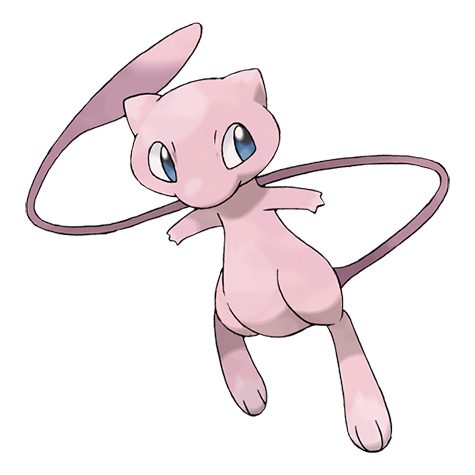

Mew Weakness (2x)
Bug Ghost Dark
#151 · Psychic · New Species Pokemon · Gen 1
Mew is the reason the word mythical exists in Pokemon: a Psychic-type from Kanto with a flat 100 in every stat, no evolution stage, and a catch record that has stayed event-only since 1996. It closes the original dex at number 151.

BST 600
Abilities: Synchronize · Evolution stage: none
Every number on the card above comes from the full 18-type grid on the Pokemon Type Chart.
Bug Ghost Dark
Fighting Psychic
Mewtwo is the obvious next stop. After that, the index has the rest of the dex in one place.
The original mythical, by the numbers
Number 151 is where the Kanto dex runs out, and Mew is the strangest thing inside it. Six stats, all sitting on exactly 100, for a 600 total with no spike anywhere. The typing is single (Psychic), the ability list is one entry long, and there is no stage before it or after it. It has been event-only from the start, which is why most players meet one in a battle simulator or a trade rather than in tall grass.
That flat spread is the whole design. Nothing here is a dump stat, and nothing is a carry stat either. A 100 Speed ties with a long list of common Pokemon instead of outrunning them, and 100 Special Attack lands solid hits without ever threatening a dedicated wall. Mew earns its slot through what you can teach it, not through raw numbers. Its famous counterpart, Mewtwo, goes the other way, pouring 680 points into speed and special attack.
One type keeps the rules short. Psychic gets same-type bonus on Psychic moves, and it drags in exactly three weaknesses: Bug, Ghost and Dark. Fighting and Psychic attacks come back at half damage. Nothing is immune, and there is no second type adding a surprise hole to the sheet.
Kanto is where this typing built its reputation. Ghost was supposed to punish Psychic and instead did nothing to it, thanks to a coding quirk, while the Bug moves that existed hit too softly to matter. Current games hand you the chart as written, so plan around it rather than around the old stories.
Two resistances is not a lot, and three weaknesses is no disaster either. It is a fair sheet rather than a scary one, which is why nobody picks Mew for its defensive profile. You pick it for what you can teach it.
Half the spread is defensive: 100 HP, 100 Defense, 100 Special Defense. That mix eats neutral hits without flinching and takes Fighting or Psychic attacks for half. The other half is 100 Attack, 100 Special Attack and 100 Speed, which is enough to hit back without ever being the reason you win.
Nothing evolves out of Mew, so there is no payoff waiting at level 36 or level 50. Whatever role you hand it, it keeps that role forever. In practice that points toward utility work: a move for this fight, a resist for the next one, and the damage left to teammates with a sharper stat line. It also ages well, because a flexible spread does not get worse as later generations arrive with bigger numbers.
Bug, Ghost and Dark all double up on Mew. Fighting and Psychic come in at half. Everything else lands neutral, and that neutral column is long. The practical read is simple: ghost trainers and dark-type hitters deserve a second thought, while a Fighting-type opponent is free switch-in material.
Because it absorbs neutral damage that well, Mew survives turns frailer Pokemon cannot. That is the point of the spread. Take the hit, use the turn to set something up, and let a dedicated attacker close the fight.
Worth knowing: none of the three weaknesses is rare. Bug, Ghost and Dark moves turn up on ordinary route trainers, not just on bosses, so Mew is not something to leave in against an opponent you have not scouted.
Mew is not a route encounter, so the team around it is a planning job. Draft the squad in the Nuzlocke Team Builder, and if you need a legal body in a slot before that, spin one up with the Random Pokemon Picker. Lay the final six out in the Pokemon Team Picker.
Then settle the details: nature in the Pokemon Nature Chart, stats in the Pokemon IV Calculator. If you would rather flip than calculate, the Pokemon Wheel Spinner and Who's That Pokemon get you to an answer faster.
Variants are their own story with Mew. A shiny one has only ever come out of an event, so Pokemon Shiny Odds is not the page that helps here; the Random Shiny Pokemon Generator and Random Mega Pokemon Generator are more useful for the species you can actually hunt.
Ask anyone who has run a Mew what stands out and the answer will not be the stats. It is the move list. In the original games Mew could be taught every TM and HM in the game, a claim no other Pokemon could make, and that reputation carried forward: today the pool covers attacks of every type alongside status, recovery and support moves.
It also learns Transform, which explains why no two Mew sets look alike. Nothing in the stat line points at one job, so the job comes from the four moves you pick. Copy the opponent, patch a hole in your team, or hand it four attacks and let it work.
FAQ
Mew is a single-type Psychic Pokemon. Bug, Ghost and Dark hit it for double damage, Fighting and Psychic come in at half, and everything else sits at neutral. With no second type, that list never changes.
Bug, Ghost and Dark, all at 2x. Fighting and Psychic are the two attacks that land for half. That makes three weaknesses and two resistances, with nothing on the sheet immune to it.
No. Mew is a one-stage Pokemon: nothing evolves into it and nothing evolves out of it.
Synchronize is its only ability. It copies a burn, poison or paralysis back onto whoever inflicted it, which suits a build meant to sit in front of bulky attackers.
There is no chart to read, because the line is a single stage. Mew never evolves, so any diagram showing it changing form is fan-made rather than a game mechanic.
Mew is classed as a mythical Pokemon rather than a legendary. The practical difference is availability: it has only ever been given out through events, never found on a route or in a raid den.